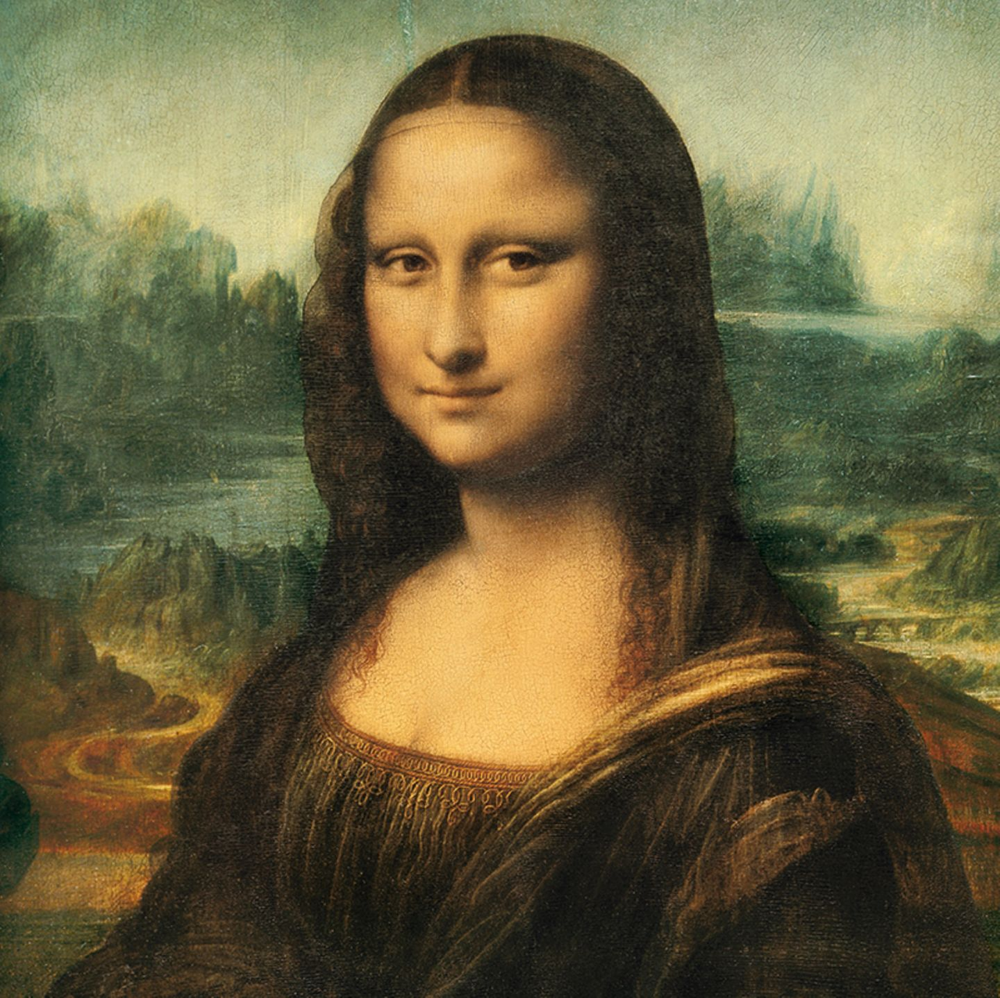
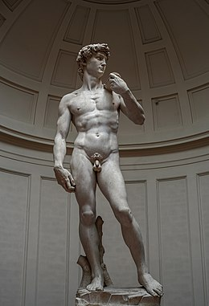
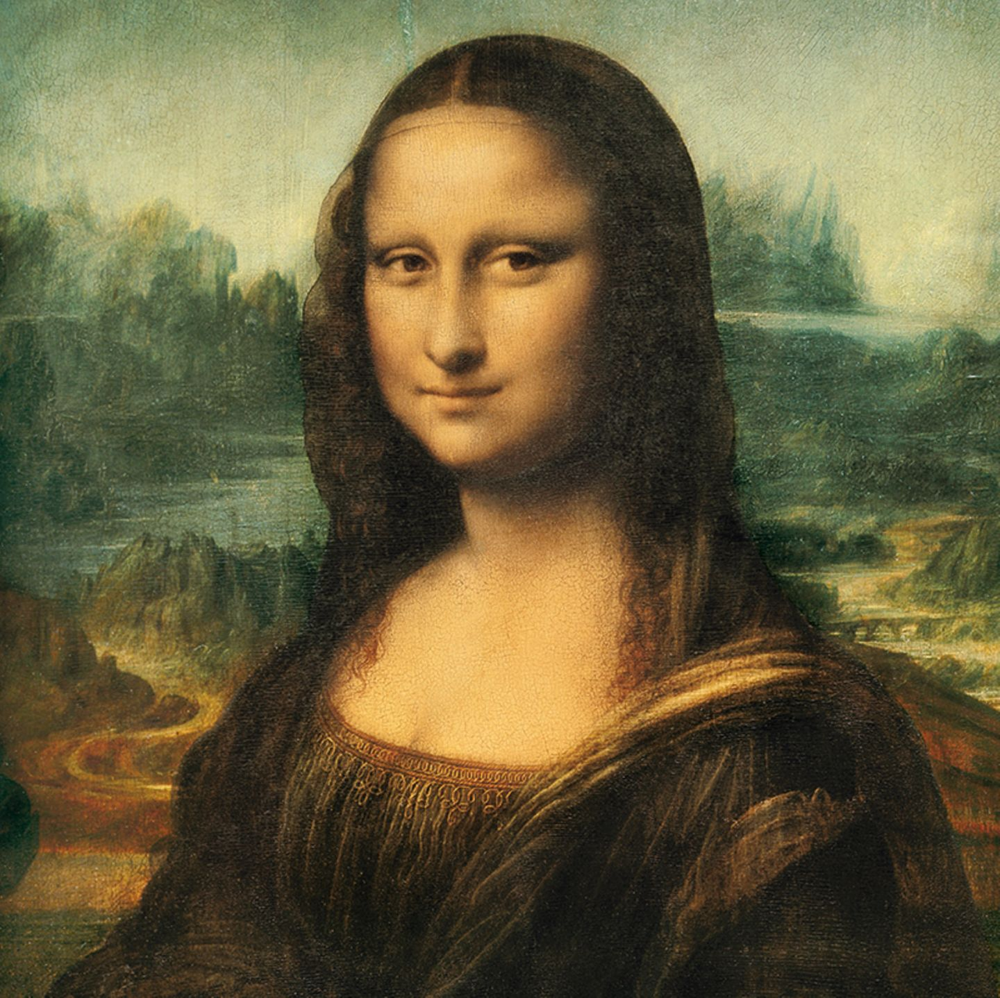
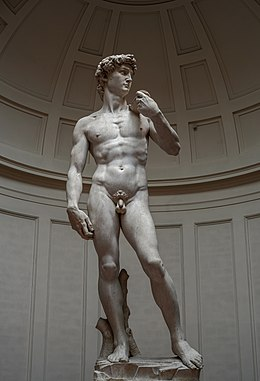

Cultura
Arte
L'Italia ha avuto e continua ad avere molti artisti famosi per le diverse epoche! tempi! Alcuni dei più importanti artisti del Rinascimento furono:
- Raffaelo Santi. Fu pittore a Firenze e persino alla corte papale, e fu anche il direttore della famosa Basilica di San Pietro. della famosa Basilica di San Pietro. La sua opera più famosa è "La scuola di Atene", conservata nella Stanza delle Segnature in Vaticano. che è conservata nella Stanza delle Segnature in Vaticano. Il suo autoritratto, che datato tra il 1504 e il 1506, è anch'esso molto famoso.
- Un altro artista molto famoso è Leonardo da Vinci. Non era solo un pittore, ma anche ingegnere, scienziato, teorico, scultore e architetto. e architetto. La sua opera più famosa è la "Gioconda", che oggi quasi tutti conoscono. Un altro famoso murale è "L'ultima cena".
- Anche Michelangelo (di Lodovico Buonarroti Simoni) era molto famoso e non era solo un pittore, ma anche un architetto, un poeta e uno scultore. pittore, ma anche architetto, poeta e scultore. Tra le sue opere più famose tra le sue opere più famose ci sono "Il David di Michelangelo", la prima statua monumentale dell'Alto Rinascimento, e "La creazione di Adamo", un affresco che rappresenta un'opera di grande valore. "La creazione di Adamo", un affresco.

 




Architettura
Anche in Italia ci sono stati molti architetti e architetture importanti e famosi.
Andrea Palladio (Andrea di Pietro), è stato il più importante architetto del Nord Italia.
Rinascimento nord-italiano. Il suo modello era l'architettura dell'antica Roma. Famosa è la sua "Villa Rotonda".
alla periferia di Vincenza e anche "Il Palazzo di Giustizia" in Piazza dei Signori a Vicenza.
In Puglia si trova "Il Castel del Monte", costruito intorno al 1240-1250. Ha una forma ottagonale
ottagonale con otto torri ottagonali e un cortile interno ottagonale, non ha un modello architettonico e questa forma non fu mai più utilizzata.
modello architettonico e questa forma non fu mai più utilizzata. Dal 1996 è Patrimonio dell'Umanità dell'UNESCO.
Il Colosseo è una delle strutture più famose d'Italia e si trova a Roma. È il più grande anfiteatro
anfiteatro più grande costruito nell'antica Roma e anche il più grande del mondo. Nell'antichità veniva
come sede di eventi raccapriccianti, oggi le rovine della struttura sono uno dei punti di riferimento della città di Roma.
della capitale Roma.


Cibo
Non possiamo ovviamente dimenticare la cucina italiana. La cucina italiana è una delle parti più famose della cultura italiana. Molto famosi sono pasta e pizza, ma c'è molto di più. Tra i piatti più famosi ci sono anche: Risotto, un piatto a base di riso; Gnocchi, pasta a base di patate (per lo più); Lasagne, Casseruola composta da diversi strati di pasta (sfoglie); Gelato Polenta, un braciere solido a base di semola di mais; Arancini e Suppli, entrambe polpette di riso fritte e ripiene, con ripieni leggermente diversi; Panzerotto fritto, si tratta di tasche di pizza descritte in modo approssimativo; Tiramisù, un delizioso dessert a base di strati di savoiardi e crema di mascarpone, tuorlo d'uovo e zucchero. e una crema di mascarpone, tuorlo d'uovo e zucchero; e molto altro ancora.